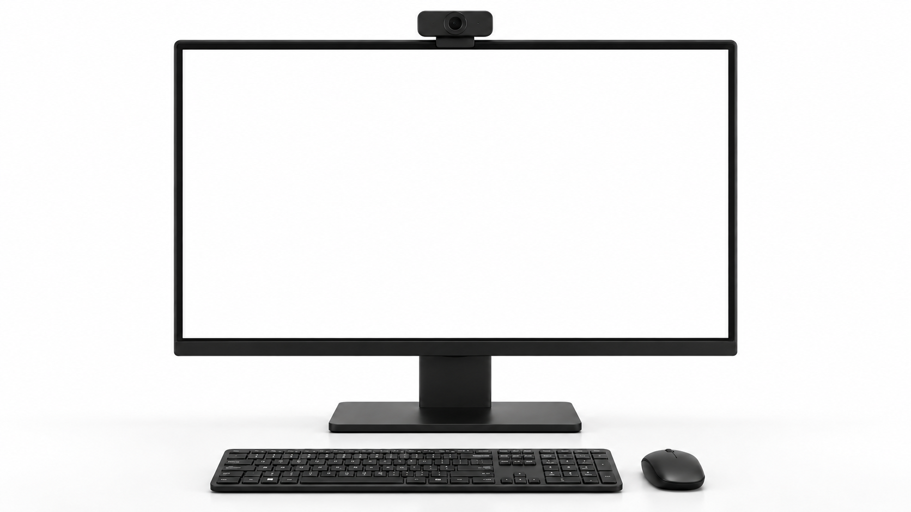
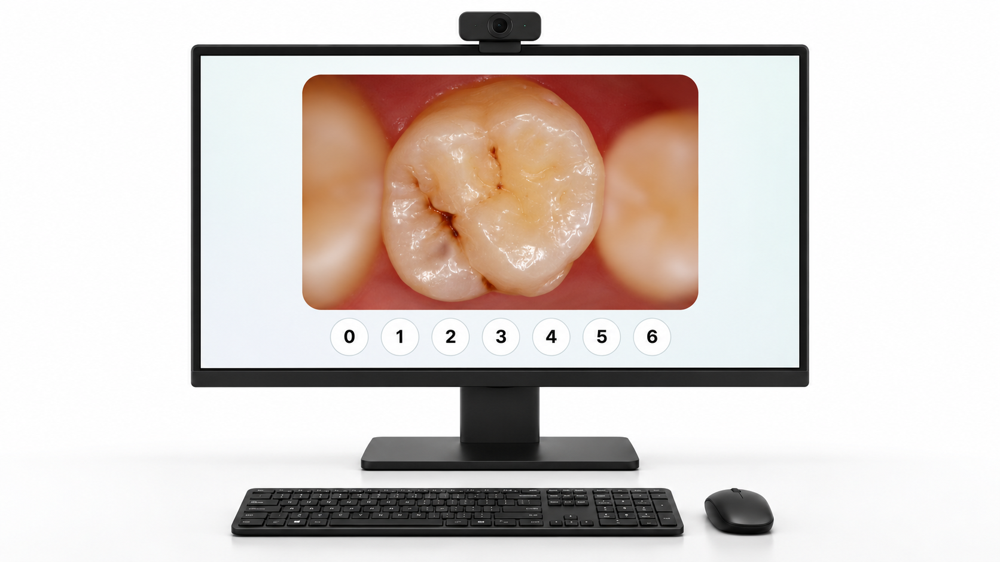
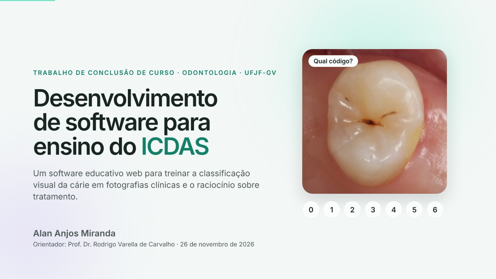

◇
ICDAS
Quiz
/ abertura 3D
Carregando modelo...
Trabalho de Conclusão de Curso
Odontologia
UFJF-GV


3

PROTÓTIPO · TCC / 2026
SLIDE 1 · ICDASQUIZ
Preparando geometria e texturas...
Próximo: formar dente
▶
Reiniciar
Pausar
Ver vídeo aprovado
Espera · 00:00
TÍTULO
ASCII
MESH
QUIZ
VÍDEO
SLIDE